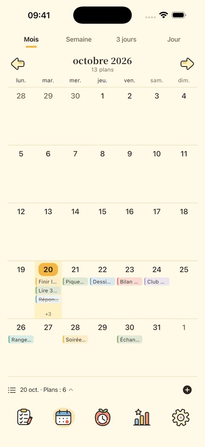
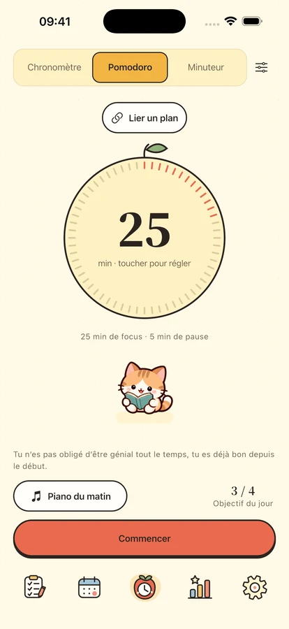
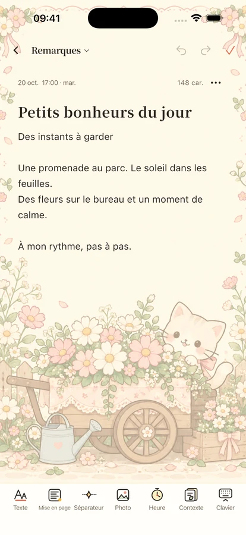

Un peu de calme.
Un peu de compagnie.
Organisez vos projets, concentrez-vous sur une chose et gardez vos idées et dates précieuses à portée de main.
Pour iPhone et iPad · Sortie en préparation

Une chose à la fois.
Commencez par un petit pas
De la place pour vos projets, votre temps et un peu de douceur.

Chaque projet à sa place.
Distinguez importance et urgence avec quatre quadrants. Consultez vos journées, semaines et mois dans le calendrier, avec récurrences, sous-tâches et rappels locaux.
Du temps pour ce qui compte.
Pomodoro, compte à rebours ou chronomètre : 8 morceaux hors ligne et 11 ambiances accompagnent vos séances. Retrouvez quatre compagnons et une horloge à volets. La bibliothèque complète nécessite Plus ou l’essai de trois jours ; un morceau, une ambiance et le silence restent gratuits. Plus: Styles d’horloge Plus · Styles de widgets Plus · Statistiques avancées · Modèles de plans · Sauvegarde automatique · Historique des sauvegardes.



Gardez les jours et les idées.
Écrivez des mémos mis en forme avec photos et papiers, puis retrouvez-les par date ou catégorie. Préparez anniversaires et événements avec les comptes à rebours. Les widgets pour projets, calendrier, concentration, événements et mémos nécessitent iOS 17 ou ultérieur.
Votre quotidien vous appartient.
Les fonctions locales sont accessibles sans compte. Les sauvegardes cloud sont manuelles et les statistiques d’utilisation désactivées par défaut. Exportez vos données et gérez vos choix de confidentialité.
Confidentialité